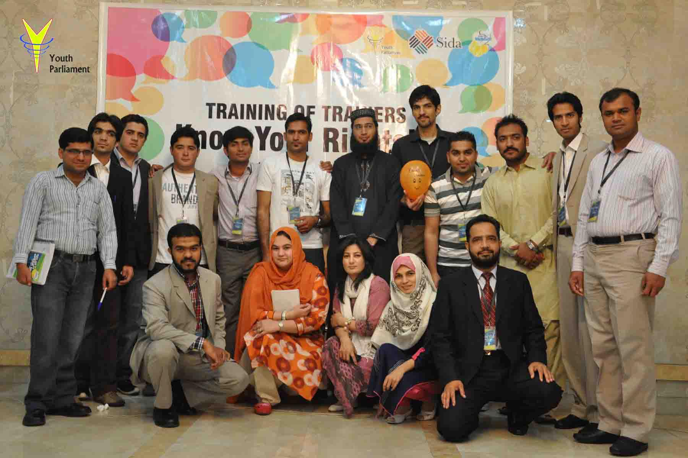

Democratic Governance & Civic Participation
Promoting democratic values, constitutional awareness, civic engagement, and active citizenship among young people through parliamentary simulations, policy dialogue, and institutional learning.
History of YPP
Youth Parliament Pakistan is built around leadership, service, and youth empowerment.

History
Youth Parliament of Pakistan is conceived, conceptualized and planned to execute with a vision to empower the youth of Pakistan with the ability to understand the importance of their role in community services and to nurture their leadership qualities.
YPP is a non-profit, non-political, non-religious program initiated to foster and translate talent and excellence of adolescents and youths of Pakistan into tangible action and community service and in the process provide a nursery for scientifically trained leaders and citizens of character and substance.
In the process the community’s abandoned, sick and underprivileged are linked and benefited in a relationship of symbiosis and interdependence with the youth of Pakistan.
Youth Parliament of Pakistan is conceived, conceptualized and planned to execute with a vision to empower the people of Pakistan focusing on youth with the ability to understand the importance of their role in community services and to nurture their leadership qualities to pave the way for establishment of a democratic society.
Thematic areas
Promoting democratic values, constitutional awareness, civic engagement, and active citizenship among young people through parliamentary simulations, policy dialogue, and institutional learning.
Advancing awareness and protection of human rights with a focus on gender equality, minority rights, child protection, and social inclusion of marginalized communities.
Strengthening leadership competencies, critical thinking, communication skills, ethical leadership, and civic responsibility among youth through structured training and mentorship programs.
Facilitating evidence-based policy discussions, youth-led research, and dialogue platforms that enable young people to contribute to national policy development and reform processes.
Promoting voter education, electoral awareness, democratic participation, and informed citizenship to strengthen participatory democracy in Pakistan.
Supporting youth-driven initiatives that address local development challenges in education, health, poverty alleviation, and social welfare through community-based action.